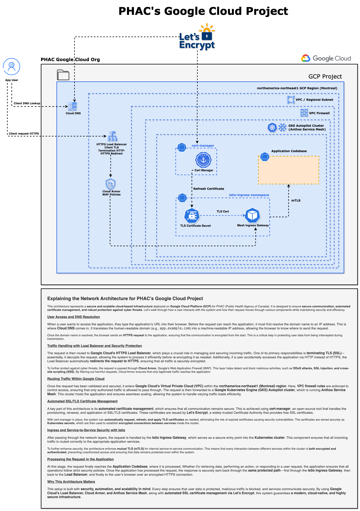

PHAC's Google Cloud Project

Explaining the Network Architecture for PHAC’s Google Cloud Project
This architecture represents a secure and scalable cloud-based infrastructure deployed on Google Cloud Platform (GCP) by PHAC (Public Health Agency of Canada). It is designed to ensure secure communication, automated certificate management, and robust protection against cyber threats. Let’s walk through how a user interacts with the system and how their request moves through various components while maintaining security and efficiency.
User Access and DNS Resolution
When a user wants to access the application, they type the application’s URL into their browser. Before the request can reach the application, it must first resolve the domain name to an IP address. This is where Cloud DNS comes in. It translates the human-readable domain (e.g., app.example.ca) into a machine-readable IP address, allowing the browser to know where to send the request.
Once the domain name is resolved, the browser sends an HTTPS request to the application, ensuring that the communication is encrypted from the start. This is a critical step in protecting user data from being intercepted during transmission.
Traffic Handling with Load Balancer and Security Protection
The request is then routed to Google Cloud’s HTTPS Load Balancer, which plays a crucial role in managing and securing incoming traffic. One of its primary responsibilities is terminating TLS (SSL)—essentially, it decrypts the request, allowing the system to process it efficiently before re-encrypting it as needed. Additionally, if a user accidentally accesses the application via HTTP instead of HTTPS, the Load Balancer automatically redirects the request to HTTPS, ensuring that all traffic remains securely encrypted.
To further protect against cyber threats, the request is passed through Cloud Armor, Google’s Web Application Firewall (WAF). This layer helps detect and block malicious activities, such as DDoS attacks, SQL injection, and cross-site scripting (XSS). By filtering out harmful requests, Cloud Armor ensures that only legitimate traffic reaches the application.
Routing Traffic Within Google Cloud
Once the request has been validated and secured, it enters Google Cloud’s Virtual Private Cloud (VPC) within the northamerica-northeast1 (Montreal) region. Here, VPC firewall rules are enforced to control access, ensuring that only authorized traffic is allowed to pass through.
The request is then forwarded to a Google Kubernetes Engine (GKE) Autopilot cluster, which is running Anthos Service Mesh. This cluster hosts the application and ensures seamless scaling, allowing the system to handle varying traffic loads efficiently.
Automated SSL/TLS Certificate Management
A key part of this architecture is automated certificate management, which ensures that all communication remains secure. This is achieved using cert-manager, an open-source tool that handles the provisioning, renewal, and application of SSL/TLS certificates.
These certificates are issued by Let’s Encrypt, a widely trusted Certificate Authority (CA).
With cert-manager, the system can automatically request, renew, and apply TLS certificates and enforce mTLS (mutual TLS) authentication between services. This allows the system to establish encrypted connections between microservices, reducing the risk of expired certificates causing security vulnerabilities. The certificates are stored securely as Kubernetes Secrets.
Ingress and End-to-End Service Security with Istio
After passing through the network layers, the request is routed to the Istio Ingress Gateway, which serves as a secure entry point into the Kubernetes cluster. This component ensures that all incoming traffic is routed correctly to the appropriate application services.
To further enhance security, the architecture enforces mutual TLS (mTLS) for internal service-to-service communication. This means that every interaction between different services within the cluster is both encrypted and authenticated, preventing unauthorized access and ensuring that remote attackers cannot impersonate a service.
Processing the Request in the Application
At this stage, the request finally reaches the Application Codebase, where it is processed. Whether it’s retrieving data, performing an action, or responding to a user request, the application ensures that all operations follow strict security policies.
Once the application has processed the request, the response is securely sent back through the same protected path—first through the Istio Ingress Gateway, then back to the Load Balancer, and finally to the user’s browser over an encrypted HTTPS connection.
Why This Architecture Matters
This system is built with security, automation, and scalability in mind. Every step ensures that:
- All data is protected using encryption.
- Malicious traffic is blocked before it reaches the application.
- Services communicate securely using mTLS authentication.
By using Google Cloud’s Load Balancer, Cloud Armor, and Anthos Service Mesh, along with automated SSL certificate management via Let’s Encrypt, this system guarantees a modern, cloud-native, and highly secure infrastructure.